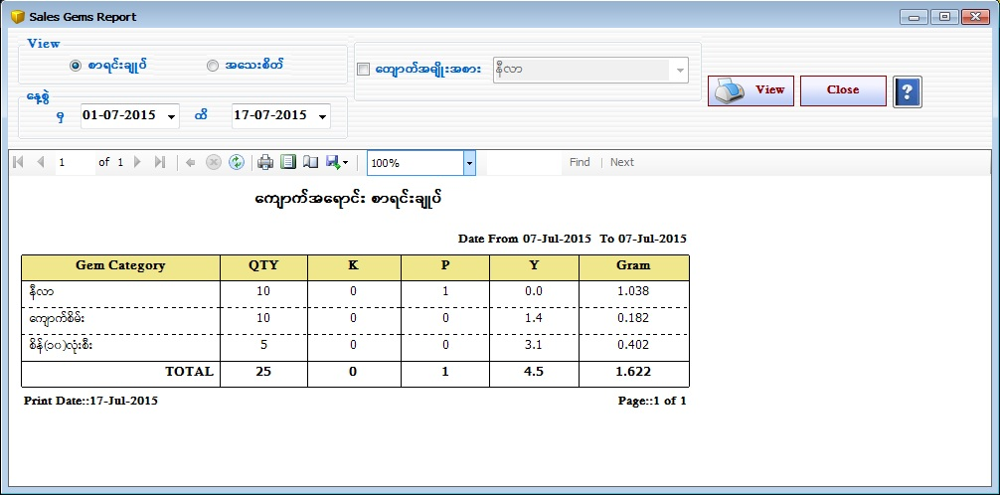

Sales Gems Report Setup

- Reports အောက်ရှိ Sales Gems Report Form ကိုဖွင့်ပါ။
- Sales Gems Report Form သည် ကျောက်အရောင်းစာရင်းကို ပြန်လည်ကြည့်နိုင်သော Form ဖြစ်သည်။
- စိန်၊ကျောက်အရောင်းစာရင်းချုပ်ကိုကြည့်လိုပါက စာရင်းချုပ် Button ကို on ထားပါ။
- အသေးစိတ် ကြည့်လိုပါက အသေးစိတ် Button ကို on ထားပါ။
- Gem Category အလိုက်ကြည့်လိုလျှင် Gem Category ၏ check box ကို on ပြီးကြည့်လိုသော Gem Category အား combo box တွင်ရွေးချယ်ပြီး ကြည့်ရှုနိုင်သည်။
- မိမိကြည့်လိုသော From Date နှင့် To Date ကိုရွေးချယ်ပေးရပါမည်။ From Date နှင့် To Date အတွင်း ေရာင်းထားသော စိန်၊ကျောက်အရောင်းစာရင်းများကို တွေ့ရမည်ဖြစ်သည်။